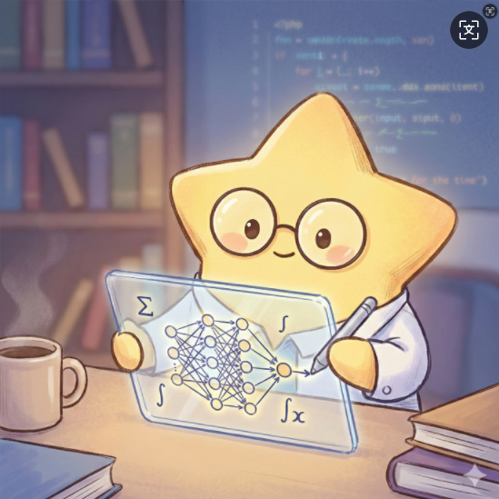

XINGHUA UNIV. ALGORITHM DATABASE
地球人你好，这里是我在地球潜伏期间建立的算法交互实验室。
不要死记硬背枯燥的代码，请在下方选择你想探索的学科领域，用操控宇宙飞船的方式来理解计算机底层的核心逻辑。
如果算法是发动机，数据结构就是油箱。全息投影演示数组、链表、栈、队列、树与图的核心调度逻辑。
深潜计算机底层，亲眼见证连续内存的 O(1) 空间跃迁与 O(N) 插入时引发的空间坍缩噩梦。
突破连续内存的限制！亲眼见证 O(1) 的指针断裂与重连，一键切换单向、双向与循环链表形态。
探秘最霸道的容器规则：后进先出。手搓 Push 与 Pop，亲手触发导致程序崩溃的 Stack Overflow (栈溢出) 灾难。
先来先服务 FIFO 的宇宙规则！可视化入队/出队，观察队首队尾如何在时间轴上同步移动。
桶、哈希函数、冲突与扩容：把 key 映射到宇宙坐标，亲眼看见 load factor 如何触发重哈希。
分层宇宙档案：遍历、插入与结构变换的树形全息视图。
节点与边的暗物质网络：探索图上的连接与路径。
上浮与下沉：用堆维护宇宙优先级队列的秩序。